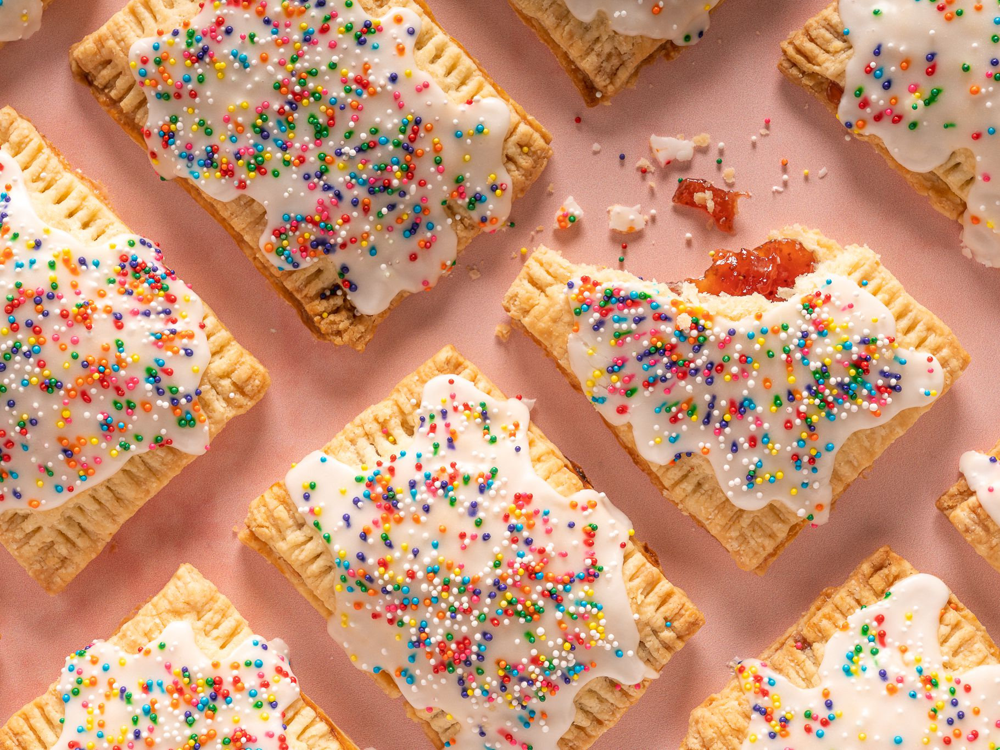

Pop Tarts@

Description
This recipe is a famous classic in my family.
It has been passed down from the age of my ancestors.
Ingredients
- 2 cups all-purpose flour
- 1 tablespoon white sugar
- 1 teaspoon salt
- 1 teaspoon salt
- cup chilled unsalted butter, cut into cubes
- ½ teaspoon vanilla extract
- ¼ cup cold water
Steps
- Preheat oven to 375 degrees F (190 degrees C). Line 2 baking sheets with parchment paper.
- Sift flour, 1 tablespoon sugar, and salt together into a bowl. Cut in chilled butter with a pastry blender or 2 knives until mixture resembles small peas. Add vanilla. Mix in cold water, 1 tablespoon at a time, until dough comes together and forms a ball.
- Divide dough into 2 pieces and wrap with plastic wrap; chill until firm, at least 1 hour.
- Beat softened butter, 1/4 cup sugar, and cinnamon together in a bowl to make filling.
- Roll out dough on a lightly floured work surface to 1/2-inch thickness. Cut dough into rectangles with a knife. Drop 1 tablespoon of filling onto half of the rectangles. Cover with remaining rectangles. Press edges with a fork to seal. Poke a few holes in the top of each pastry with a toothpick.
- Arrange pastries on the lined baking sheets.
- Bake in the preheated oven until golden brown, 25 to 30 minutes. Cool pastries on a wire rack, about 15 minutes.